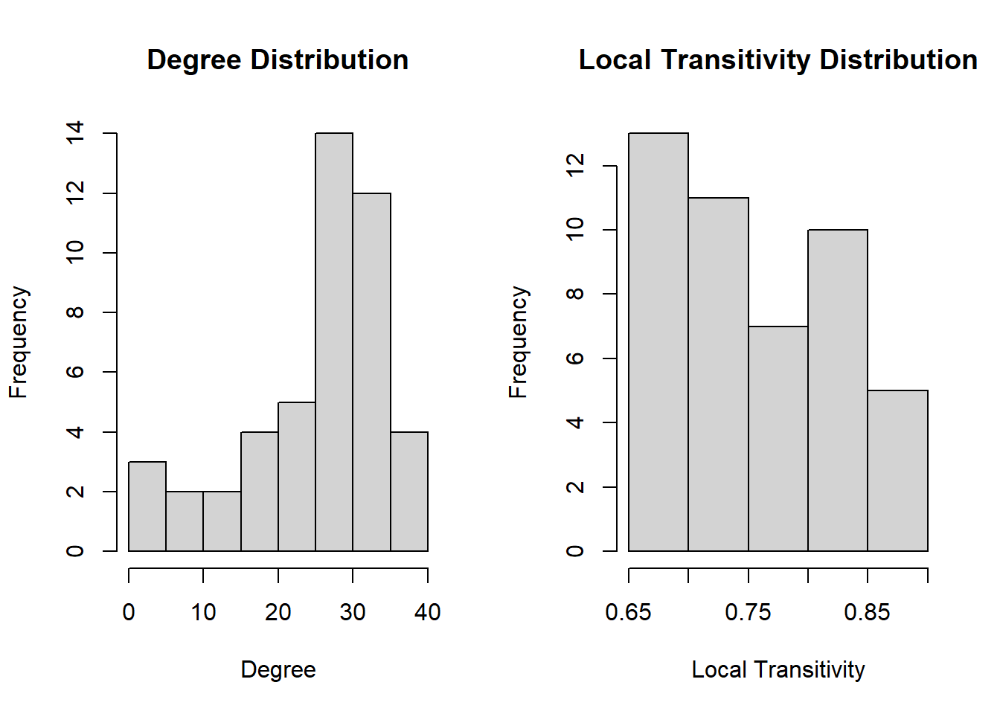

Describe the Network Data - Introduction - Objective - Data Read and Negative Edge Normalization - Network Size, Features and Attributes
Dyad and Triad Census
Global and Local Transitivity or Clustering
Path Length and Component Structure
Describing the Basic Structure of a Network
Author
Akhilesh Kumar
Published
March 27, 2023
Code
library(igraph)
Attaching package: 'igraph'
The following objects are masked from 'package:stats':
decompose, spectrum
The following object is masked from 'package:base':
union
Code
library(tidyr)
Attaching package: 'tidyr'
The following object is masked from 'package:igraph':
crossing
Challenge Overview
Describe the basic structure of a network following the steps in tutorial of week 2, this time using a dataset of your choice: for instance, you could use Marriages in Game of Thrones or Like/Dislike from week 1.
Another more complex option is the newly added dataset of the US input-output table of direct requirements by industry, availabe in the Bureau of Economic Analysis. Input-output tables show the economic transactions between industries of an economy and thus can be understood as a directed adjacency matrix. Data is provided in the form of an XLSX file, so using read_xlsx from package readxl is recommended, including the sheet as an argument (2012 for instance).
Identify and describe content of nodes and links, and identify format of data set (i.e., matrix or edgelist, directed or not, weighted or not), and whether attribute data are present. Be sure to provide information about network size (e.g., information obtained from network description using week 1 network basic tutorial commands.)
Explore the dataset using commands from week 2 tutorial. Comment on the highlighted aspects of network structure such as:
Geodesic and Path Distances; Path Length
Dyads and Dyad Census
Triads and Triad Census
Network Transitivity and Clustering
Component Structure and Membership
Be sure to both provide the relevant statistics calculated in R, as well as your own interpretation of these statistics.
Introduction
This Network Analysis project delves into the relationships between characters in the widely popular TV show “Game of Thrones” through the lens of graph theory and network analysis techniques. The data set utilized in this project provides information on character likes and dislikes, which is then transformed into a network of relationships between characters, providing a unique perspective on the web of character relationships in the show.
The main objective of this data analysis project is to gain a better understanding of the character relationships in the show.
Data Read and Negative Edge Normalization
The first section of the project involves reading in the data from a CSV file and selecting relevant columns for analysis. The resulting data frame is converted into a matrix and normalized to address the negative weights of dislikes. The normalized matrix is then used to create an undirected, weighted graph using the igraph package.
The resulting network graph contains nodes representing characters and edges representing the weighted connections between them based on their likes and dislikes. The graph can be further analyzed to identify dyads, triads, clustering, geodesic distance, and component structure within the network.
Code
data =read.csv('_data\\got\\got_like_dislike.csv', header=TRUE)data = data[,4:ncol(data)]# Convert the data frame to matrixadj_matrix <-as.matrix(data)# Normalize the matrix to manage negative weights of dislikes:normalized_adj_matrix <- (adj_matrix +10) /10normalized_adj_matrix[normalized_adj_matrix ==1] <-0# Create a graph object from the normalized adjacency matrixgraph.ig <-graph_from_adjacency_matrix(normalized_adj_matrix, mode ="undirected", diag =FALSE, weighted =TRUE)# List the objects to verify that datafiles are working properlyls()
The “got_like_dislike” network consists of 46 nodes, which represent characters, and 589 edges, which represent the likes and dislikes between the characters. The edges are weighted, meaning that each edge has a value that indicates the strength of the like or dislike relationship between the characters. The network is not bipartite, meaning that all nodes are of the same type, in this case, characters. Additionally, the network is undirected, indicating that the likes and dislikes are mutual between the characters.
Based on the range of edge weights, it seems like the likes and dislikes between characters are relatively consistent in strength, with edge weights ranging from 0.5 to 1.5. The mean and median edge weights of 0.939219 and 0.9, respectively. The highest weighted edge is 1.5, suggesting an strong like relationship between characters, whereas 0.5 is the lowest weighted edge, suggesting an strong dislike relationship between characters
The analysis also shows that each node has a “name” attribute, which corresponds to the name of the character it represents. The names of all the characters are listed in the output. Additionally, each edge has a “weight” attribute, which corresponds to the strength of the relationship between the characters connected by the edge. The weights of all the edges are listed in the output.
This analysis provides useful insights into the relationships between the characters in the GoT TV series. By studying the weights of the edges, it is possible to identify the characters who have the strongest relationships and those who have the weakest relationships.
The output shows that:
The network got_like_dislike has 46 nodes and 589 edges.
The network is not bipartite.
The network is not directed.
The network has weighted edges.
The only vertex attribute in the network is name, which gives the names of all the nodes.
The names of all the nodes in the network are shown in the output.
The only edge attribute in the network is weight, which gives the weights of all the edges.
Code
# Number of vertices in got_like_dislike network:vcount(graph.ig)
[1] 46
Code
# Number of edges in got_like_dislike network:ecount(graph.ig)
[1] 589
Code
# Bipartite or single mode network verification in got_like_dislike network:is_bipartite(graph.ig)
[1] FALSE
Code
# Directed or undirected edges verification in got_like_dislike networkis_directed(graph.ig)
[1] FALSE
Code
# Weighted or unweighted edges verification in got_like_dislike networkis_weighted(graph.ig)
[1] TRUE
Code
# Is Connected verification in got_like_dislike networkis_connected(graph.ig)
[1] TRUE
Code
# Vertex attributes for got_like_dislike networkvertex_attr_names(graph.ig)
[1] "name"
Code
# Vertex attribute, Nodes in got_like_dislike network:V(graph.ig)$name
# maximum weight of the edges in got_like_dislike network:max(E(graph.ig)$weight)
[1] 1.5
Code
# minimum weight of the edges in got_like_dislike network:min(E(graph.ig)$weight)
[1] 0.5
Code
# mean & median weight of the edges in got_like_dislike network:mean(E(graph.ig)$weight)
[1] 0.939219
Code
median(E(graph.ig)$weight)
[1] 0.9
Dyad and Triad Census
The first analysis calculates the dyad census, which classifies all possible pairs of nodes in the network into three categories: mutual ties (where both nodes like each other), asymmetric ties (where one node likes the other but not vice versa), and null ties (where neither node likes the other). In this case, there were 589 mutual ties and 446 null ties, and no asymmetric ties.
The triad census counts the number of each possible combination of three nodes in a network, which are called triads. The function returns a vector with 16 values, each corresponding to the count of a particular triad type. In this case, there are 1780 triads of type 003, 4945 triads of type 012, 4394 triads of type 102, and 4061 triads of type 021D.
Finally, the code sums up the total number of triads returned by the triad census, which is 15180. This provides an overall picture of the patterns of relationships between nodes in the network.
Code
# Classify all Dyads in the got_like_dislike network: igraphigraph::dyad.census(graph.ig)
$mut
[1] 589
$asym
[1] 0
$null
[1] 446
Code
# Classify all Triads in the got_like_dislike Network: igraphigraph::triad_census(graph.ig)
Warning in igraph::triad_census(graph.ig): At core/misc/motifs.c:1165 : Triad
census called on an undirected graph.
# Total number of Triads returned by triad censussum(igraph::triad_census(graph.ig))
Warning in igraph::triad_census(graph.ig): At core/misc/motifs.c:1165 : Triad
census called on an undirected graph.
[1] 15180
Global and Local Transitivity or Clustering
The output shows the results of running three different measures of clustering on the got_like_dislike network.
The first measure is the global clustering coefficient, which is a measure of how tightly connected the network as a whole is. The output shows that this network has a relatively high global clustering coefficient of 0.735, indicating that there are many triads of nodes that are fully connected to each other. This could suggest that the network represents a tightly-knit community or group of nodes.
The second measure is the local clustering coefficient, which is a measure of how much each individual node is connected to its neighbors. The output shows a vector of local clustering coefficients for each node in the network. These range from 0.666 to 0.889, with a mean of 0.75. This suggests that most nodes in the network are fairly well-connected to their neighbors, but there is some variation in how tightly clustered different nodes are.
The third measure is the average local clustering coefficient, which is simply the mean of the local clustering coefficients across all nodes in the network. In this case, the output shows an average of 0.755, which is similar to the mean value for the individual nodes. This reinforces the idea that the network as a whole is fairly well-connected and densely clustered.
Overall, the output suggests that this network represents a group of nodes that are tightly-knit and well-connected, with most nodes having strong connections to their fellow actors.
What is the distribution of node degree and how does it compare with the distribution of local transitivity?
Degree distribution: The degree distribution lists the number of connections (i.e., degree) each node in the network has. For example, Lysa Arryn has 19 connections, Petyr Baelish has 24 connections, and so on.
Local transitivity: The local transitivity lists the transitivity coefficient for each node in the network. The transitivity coefficient measures the proportion of triangles (i.e., three nodes that are all connected to each other) that are actually present in the network, compared to the total number of possible triangles. A high transitivity coefficient means that a node’s connections tend to be connected to each other as well, forming clusters or communities within the network. For example, Lysa Arryn has a transitivity coefficient of 0.812, which means that the connections of Lysa Arryn tend to be connected to each other as well, forming clusters.
The fact that the degree histogram is skewed towards the right indicates that there are more nodes with higher degrees than those with lower degrees in the network. This suggests that some nodes in the network are more connected than others, and that the network may contain a few highly connected nodes (also known as “hubs”).
On the other hand, the fact that the local transitivity graph is skewed towards the left suggests that there are relatively few nodes in the network that form highly clustered groups. This means that the network may not have many nodes that are highly interconnected with one another. Instead, there may be more nodes that have connections to a few other nodes, but not necessarily to each other.
Overall, these observations suggest that the network may have a hierarchical structure with a few highly connected nodes (hubs) that connect to other less connected nodes. This type of structure is common in many real-world networks, such as social networks, transportation networks, and biological networks.
Code
# Global Clustering / Network Transitivityglobal_transitivity =transitivity(graph.ig, type="global")global_transitivity
[1] 0.7349339
Code
# Local clustering coefficientlocal_transitivity =transitivity(graph.ig, type="local")local_transitivity
# Average local clustering coefficientlocalaverage_transitivity =transitivity(graph.ig, type="localaverage")# Local Transitivity at nodes "Lysa.Arryn","Samwell.Tarly" and "Davos.Seaworth"transitivity(graph.ig, type="local", vids=V(graph.ig)[c("Lysa.Arryn","Samwell.Tarly", "Davos.Seaworth")])
# Plot degree distribution and local transitivity distributionpar(mfrow=c(1,2))hist(unname(degree_distribution), main="Degree Distribution", xlab="Degree")hist(local_transitivity, main="Local Transitivity Distribution", xlab="Local Transitivity")

Path Length and Component Structure
The average path length for the network is 1.131981. This means that on average, it takes only slightly over one connection to get from one character to another. This indicates that the characters in the network are well-connected and that there are no major barriers or isolated groups of characters.
The diameter of the network is 2.5, which indicates the maximum distance between any two characters in the network. In other words, there are pairs of characters in the network that are at most two and a half steps apart. This is another indication that the characters in the network are well-connected.
The component structure of the network reveals that there is only one component, meaning that all characters in the network are connected to each other. The size of this component is 46, indicating that all 46 characters in the dataset are connected in a single group.
Finally, the cluster membership of each node shows that all characters belong to the same cluster, or component, same as the component structure output.
Overall, these measures suggest that the Game of Thrones character co-occurrence network is a densely connected and cohesive network, where all characters are highly interconnected. This may be due to the fact that the characters in the network share a common setting and storyline, and thus are likely to interact with each other in various ways throughout the show.
Code
# Average path length for networkaverage.path.length(graph.ig,directed=F)
[1] 1.131981
Code
# Diameter of the networkdiameter(graph.ig, directed=FALSE, unconnected =FALSE, weights =E(graph.ig)$weight)
[1] 2.5
Code
# Component structure of the networkigraph::components(graph.ig)
---title: "Week 2 Challenge Submission"author: "Akhilesh Kumar"description: "Describing the Basic Structure of a Network"date: "03/27/2023"format: html: toc: true code-fold: true code-copy: true code-tools: truecategories: - challenge Overview - Describe the Network Data - Introduction - Objective - Data Read and Negative Edge Normalization - Network Size, Features and Attributes - Dyad and Triad Census - Global and Local Transitivity or Clustering - Path Length and Component Structure ---```{r setup, include=FALSE, warnings=FALSE}knitr::opts_chunk$set(echo =TRUE)``````{r}library(igraph)library(tidyr)```## Challenge OverviewDescribe the basic structure of a network following the steps in tutorial of week 2, this time using a dataset of your choice: for instance, you could use Marriages in Game of Thrones or Like/Dislike from week 1.Another more complex option is the newly added dataset of the US input-output table of direct requirements by industry, availabe in the Bureau of Economic Analysis. Input-output tables show the economic transactions between industries of an economy and thus can be understood as a directed adjacency matrix. Data is provided in the form of an `XLSX` file, so using `read_xlsx` from package `readxl` is recommended, including the `sheet` as an argument (`2012` for instance).Identify and describe content of nodes and links, and identify format of data set (i.e., matrix or edgelist, directed or not, weighted or not), and whether attribute data are present. Be sure to provide information about network size (e.g., information obtained from network description using week 1 network basic tutorial commands.)Explore the dataset using commands from week 2 tutorial. Comment on the highlighted aspects of network structure such as:- Geodesic and Path Distances; Path Length- Dyads and Dyad Census- Triads and Triad Census- Network Transitivity and Clustering- Component Structure and MembershipBe sure to both provide the relevant statistics calculated in `R`, as well as your own interpretation of these statistics.## IntroductionThis Network Analysis project delves into the relationships between characters in the widely popular TV show "Game of Thrones" through the lens of graph theory and network analysis techniques. The data set utilized in this project provides information on character likes and dislikes, which is then transformed into a network of relationships between characters, providing a unique perspective on the web of character relationships in the show.The main objective of this data analysis project is to gain a better understanding of the character relationships in the show. # Data Read and Negative Edge NormalizationThe first section of the project involves reading in the data from a CSV file and selecting relevant columns for analysis. The resulting data frame is converted into a matrix and normalized to address the negative weights of dislikes. The normalized matrix is then used to create an undirected, weighted graph using the igraph package.The resulting network graph contains nodes representing characters and edges representing the weighted connections between them based on their likes and dislikes. The graph can be further analyzed to identify dyads, triads, clustering, geodesic distance, and component structure within the network.```{r}data =read.csv('_data\\got\\got_like_dislike.csv', header=TRUE)data = data[,4:ncol(data)]# Convert the data frame to matrixadj_matrix <-as.matrix(data)# Normalize the matrix to manage negative weights of dislikes:normalized_adj_matrix <- (adj_matrix +10) /10normalized_adj_matrix[normalized_adj_matrix ==1] <-0# Create a graph object from the normalized adjacency matrixgraph.ig <-graph_from_adjacency_matrix(normalized_adj_matrix, mode ="undirected", diag =FALSE, weighted =TRUE)# List the objects to verify that datafiles are working properlyls()```## Network Size, Features and AttributesThe "got_like_dislike" network consists of 46 nodes, which represent characters, and 589 edges, which represent the likes and dislikes between the characters. The edges are weighted, meaning that each edge has a value that indicates the strength of the like or dislike relationship between the characters. The network is not bipartite, meaning that all nodes are of the same type, in this case, characters. Additionally, the network is undirected, indicating that the likes and dislikes are mutual between the characters.Based on the range of edge weights, it seems like the likes and dislikes between characters are relatively consistent in strength, with edge weights ranging from 0.5 to 1.5. The mean and median edge weights of 0.939219 and 0.9, respectively. The highest weighted edge is 1.5, suggesting an strong like relationship between characters, whereas 0.5 is the lowest weighted edge, suggesting an strong dislike relationship between charactersThe analysis also shows that each node has a "name" attribute, which corresponds to the name of the character it represents. The names of all the characters are listed in the output. Additionally, each edge has a "weight" attribute, which corresponds to the strength of the relationship between the characters connected by the edge. The weights of all the edges are listed in the output.This analysis provides useful insights into the relationships between the characters in the GoT TV series. By studying the weights of the edges, it is possible to identify the characters who have the strongest relationships and those who have the weakest relationships. The output shows that:- The network got_like_dislike has 46 nodes and 589 edges.- The network is not bipartite.- The network is not directed.- The network has weighted edges.- The only vertex attribute in the network is name, which gives the names of all the nodes.- The names of all the nodes in the network are shown in the output.- The only edge attribute in the network is weight, which gives the weights of all the edges.```{r}# Number of vertices in got_like_dislike network:vcount(graph.ig)# Number of edges in got_like_dislike network:ecount(graph.ig)# Bipartite or single mode network verification in got_like_dislike network:is_bipartite(graph.ig)# Directed or undirected edges verification in got_like_dislike networkis_directed(graph.ig)# Weighted or unweighted edges verification in got_like_dislike networkis_weighted(graph.ig)# Is Connected verification in got_like_dislike networkis_connected(graph.ig)# Vertex attributes for got_like_dislike networkvertex_attr_names(graph.ig)# Vertex attribute, Nodes in got_like_dislike network:V(graph.ig)$name# Edge attributes for got_like_dislike network:edge_attr_names(graph.ig)# Edge attribute, Edges with weights in got_like_dislike network:E(graph.ig)$weight# maximum weight of the edges in got_like_dislike network:max(E(graph.ig)$weight)# minimum weight of the edges in got_like_dislike network:min(E(graph.ig)$weight)# mean & median weight of the edges in got_like_dislike network:mean(E(graph.ig)$weight)median(E(graph.ig)$weight)```## Dyad and Triad CensusThe first analysis calculates the dyad census, which classifies all possible pairs of nodes in the network into three categories: mutual ties (where both nodes like each other), asymmetric ties (where one node likes the other but not vice versa), and null ties (where neither node likes the other). In this case, there were 589 mutual ties and 446 null ties, and no asymmetric ties.The triad census counts the number of each possible combination of three nodes in a network, which are called triads. The function returns a vector with 16 values, each corresponding to the count of a particular triad type. In this case, there are 1780 triads of type 003, 4945 triads of type 012, 4394 triads of type 102, and 4061 triads of type 021D.Finally, the code sums up the total number of triads returned by the triad census, which is 15180. This provides an overall picture of the patterns of relationships between nodes in the network.```{r}# Classify all Dyads in the got_like_dislike network: igraphigraph::dyad.census(graph.ig)# Classify all Triads in the got_like_dislike Network: igraphigraph::triad_census(graph.ig)# Total number of Triads returned by triad censussum(igraph::triad_census(graph.ig))```## Global and Local Transitivity or ClusteringThe output shows the results of running three different measures of clustering on the got_like_dislike network.The first measure is the global clustering coefficient, which is a measure of how tightly connected the network as a whole is. The output shows that this network has a relatively high global clustering coefficient of 0.735, indicating that there are many triads of nodes that are fully connected to each other. This could suggest that the network represents a tightly-knit community or group of nodes.The second measure is the local clustering coefficient, which is a measure of how much each individual node is connected to its neighbors. The output shows a vector of local clustering coefficients for each node in the network. These range from 0.666 to 0.889, with a mean of 0.75. This suggests that most nodes in the network are fairly well-connected to their neighbors, but there is some variation in how tightly clustered different nodes are.The third measure is the average local clustering coefficient, which is simply the mean of the local clustering coefficients across all nodes in the network. In this case, the output shows an average of 0.755, which is similar to the mean value for the individual nodes. This reinforces the idea that the network as a whole is fairly well-connected and densely clustered.Overall, the output suggests that this network represents a group of nodes that are tightly-knit and well-connected, with most nodes having strong connections to their fellow actors. - What is the distribution of node degree and how does it compare with the distribution of local transitivity?Degree distribution: The degree distribution lists the number of connections (i.e., degree) each node in the network has. For example, Lysa Arryn has 19 connections, Petyr Baelish has 24 connections, and so on.Local transitivity: The local transitivity lists the transitivity coefficient for each node in the network. The transitivity coefficient measures the proportion of triangles (i.e., three nodes that are all connected to each other) that are actually present in the network, compared to the total number of possible triangles. A high transitivity coefficient means that a node's connections tend to be connected to each other as well, forming clusters or communities within the network. For example, Lysa Arryn has a transitivity coefficient of 0.812, which means that the connections of Lysa Arryn tend to be connected to each other as well, forming clusters.The fact that the degree histogram is skewed towards the right indicates that there are more nodes with higher degrees than those with lower degrees in the network. This suggests that some nodes in the network are more connected than others, and that the network may contain a few highly connected nodes (also known as "hubs").On the other hand, the fact that the local transitivity graph is skewed towards the left suggests that there are relatively few nodes in the network that form highly clustered groups. This means that the network may not have many nodes that are highly interconnected with one another. Instead, there may be more nodes that have connections to a few other nodes, but not necessarily to each other.Overall, these observations suggest that the network may have a hierarchical structure with a few highly connected nodes (hubs) that connect to other less connected nodes. This type of structure is common in many real-world networks, such as social networks, transportation networks, and biological networks.```{r}# Global Clustering / Network Transitivityglobal_transitivity =transitivity(graph.ig, type="global")global_transitivity# Local clustering coefficientlocal_transitivity =transitivity(graph.ig, type="local")local_transitivity# Average local clustering coefficientlocalaverage_transitivity =transitivity(graph.ig, type="localaverage")# Local Transitivity at nodes "Lysa.Arryn","Samwell.Tarly" and "Davos.Seaworth"transitivity(graph.ig, type="local", vids=V(graph.ig)[c("Lysa.Arryn","Samwell.Tarly", "Davos.Seaworth")]) # Degree Distributiondegree_distribution = igraph::degree(graph.ig)degree_distribution# Plot degree distribution and local transitivity distributionpar(mfrow=c(1,2))hist(unname(degree_distribution), main="Degree Distribution", xlab="Degree")hist(local_transitivity, main="Local Transitivity Distribution", xlab="Local Transitivity")```## Path Length and Component Structure The average path length for the network is 1.131981. This means that on average, it takes only slightly over one connection to get from one character to another. This indicates that the characters in the network are well-connected and that there are no major barriers or isolated groups of characters.The diameter of the network is 2.5, which indicates the maximum distance between any two characters in the network. In other words, there are pairs of characters in the network that are at most two and a half steps apart. This is another indication that the characters in the network are well-connected.The component structure of the network reveals that there is only one component, meaning that all characters in the network are connected to each other. The size of this component is 46, indicating that all 46 characters in the dataset are connected in a single group.Finally, the cluster membership of each node shows that all characters belong to the same cluster, or component, same as the component structure output.Overall, these measures suggest that the Game of Thrones character co-occurrence network is a densely connected and cohesive network, where all characters are highly interconnected. This may be due to the fact that the characters in the network share a common setting and storyline, and thus are likely to interact with each other in various ways throughout the show.```{r}# Average path length for networkaverage.path.length(graph.ig,directed=F)# Diameter of the networkdiameter(graph.ig, directed=FALSE, unconnected =FALSE, weights =E(graph.ig)$weight)# Component structure of the networkigraph::components(graph.ig)# Element returned by components in the networknames(igraph::components(graph.ig))# Number of components in the networkigraph::components(graph.ig)$no # Size of each componentigraph::components(graph.ig)$csize # Cluster Membership of each nodeigraph::components(graph.ig)$membership ```